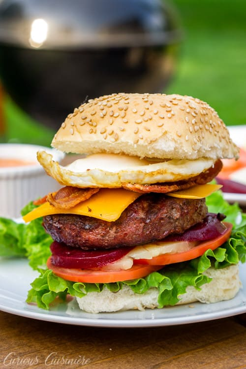

Australian Works Burger

Australian styled burgers with ingredients not
commonly found on burgers.
Ingredients
- 1 pound ground beef
- 1 large onion, sliced
- 4 eggs
- 4 slices Canadian bacon
- 4 pineapple rings
- 4 slices cheddar cheese
- 1 (8.25 ounce) can sliced beets, drained
- 4 slices tomato
- 4 lettuce leaves
- 1 tablespoon ketchup
- 1 tablespoon yellow mustard
- 2 tablespoons dill pickle relish
- 2 tablespoons mayonnaise
- 4 Kaiser rolls, split
Steps
- Preheat an outdoor grill for high heat.
- When the grill is ready, lightly oil the grilling
surface. Form the ground beef into four patties, and
grill for 5 minutes per side, or until cooked
through.
- Meanwhile, melt butter in a large skillet over medium
heat. Add onions, and fry until soft. Remove the onions
from the skillet, and crack the eggs in the same skillet
over medium heat. Cook until the yolks are solid,
turning over once. Remove eggs, and set aside. Place
the Canadian bacon in the same skillet, and fry until
toasted. Remove the bacon, and turn the heat to high.
Quickly fry the pineapple rings in the bacon drippings
just until browned on each side.
- To Assemble sandwiches: Set bottom of kaiser roll on a
plate, and top with burger, a slice of cheese, a slice
of Canadian bacon, one fried egg, fried onions, a few
slices of beet, a slice of pineapple, a slice of tomato,
and a leaf of lettuce. Decorate the top bun with ketchup,
mustard, relish and mayonnaise as desired. Place over
the burger. Repeat with remaining burgers.